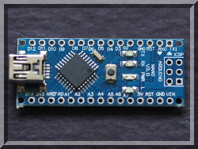
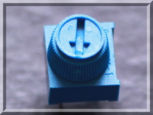
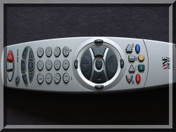
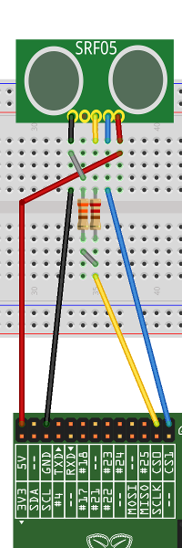
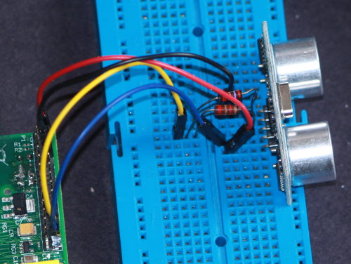
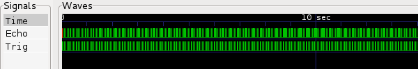
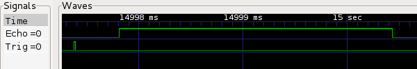
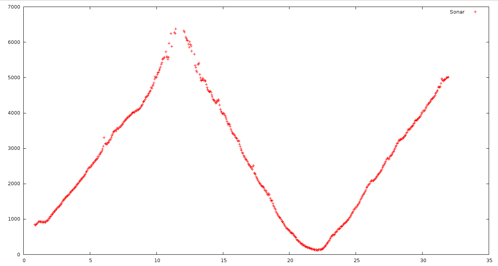
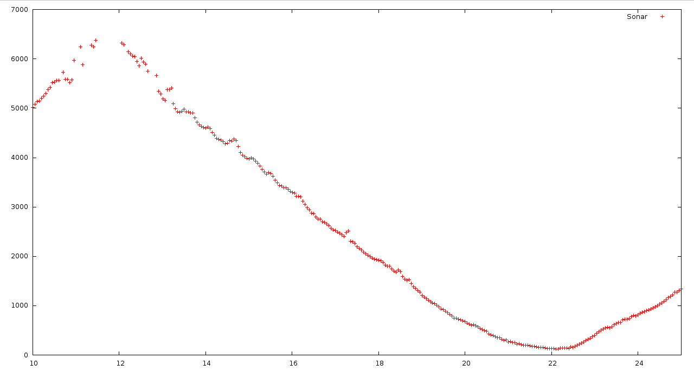

|  |  |  |
| pigpio pigpio C I/F pigpiod pigpiod C I/F Python pigs piscope Misc Examples Download FAQ Site Map | Sonar Ranger ExampleThe following code shows a method of reading a class of sonar
rangers. These rangers requires a trigger pulse.
Shortly after receiving a trigger they transmit a noise pulse and
set the echo line high. When the echo is received the echo
line is set low. SETUPThe ranger used is a SRF05 (check the pinouts, there are many variants). The fritzing diagram shows the back of the ranger, i.e. pin 1 is the rightmost. Pin 1 is 5V. Pin 2 is the trigger line. Pin 3 is the echo line. Pin 4 is out (unused). Pin 5 is ground.  CODE#include <stdio.h>
BUILDcc -o sonar sonar.c -lpigpio -lrt -lpthread
RUNsudo ./sonar >sonar.dat &While the program is running you can capture the waveform using the notification feature built in to pigpio. Issue the following commands on the Pi. pigs no
Move an object in front of the sonar ranger for a few
seconds. pigs nc 0The file sonar.vcd will contain the captured waveform, which can be viewed using GTKWave. Overview Reading circa every 10ms One reading, circa 400us another The file sonar.dat will contain pairs of timestamps and echo
length (in us). The following script will convert the
timestamps into seconds.
Gnuplot is a useful tool to graph data.   |
© 2012-2020 |
e-mail: pigpio @ abyz.me.uk |
Updated: 30/04/2020 |